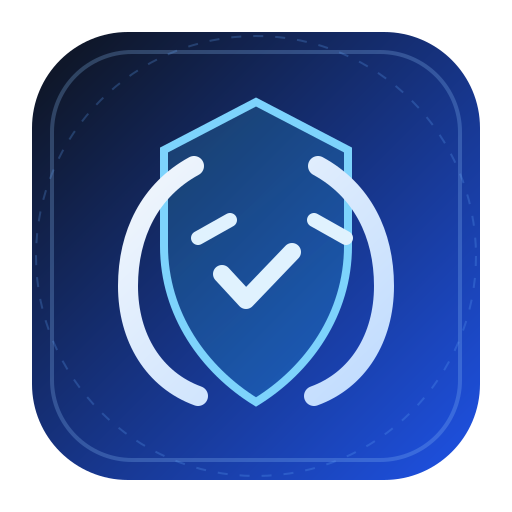
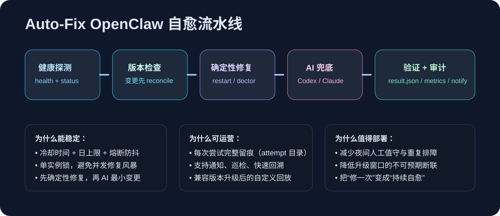
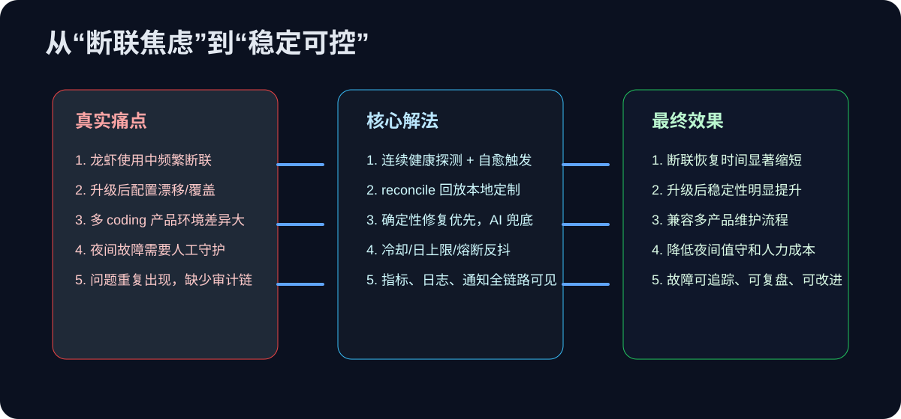

持续健康探测
连续探测 OpenClaw 网关状态，第一时间发现连接退化与断联风险。

从真实运维痛点出发：连接频繁中断、升级后漂移、跨 coding 产品环境差异大。我们做的不只是“修一次”， 而是构建一个可持续、可审计、可运营的自动修复体系。
不是为了“炫 AI”，而是为了降低真实业务中的断联损失和维护焦虑。
“探测 → 决策 → 修复 → 验证 → 通知/审计”的完整闭环。


连续探测 OpenClaw 网关状态，第一时间发现连接退化与断联风险。
优先走 restart/doctor 等确定性修复，失败后再启用 AI 后备，降低误改动概率。
版本变更时自动 reconcile，回放本地 customization，减少升级后断联。
冷却、日上限、连续失败熔断，避免修复风暴与过度干预。
支持 Codex / Claude Code 双 provider，适配不同团队工具偏好。
attempt 级日志、result.json、metrics.prom、通知路由，便于复盘和持续优化。
如果你已经被“断联 + 升级 + 兼容性”反复消耗，auto-fix-openclaw 能把这件事从“靠人硬扛”变成“系统持续自愈”。